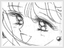
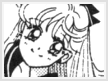

Entity » The Extras» Sign and the Meanings Everyone has a astrological sign, and they often tell of the person's traits and personalities. Minako's astrological sign is the Libra. Below are some facts on typical Libras, courtesy of Astrology.net. Most of the traits listed here are seen in Minako. Libras know how to please people. They are aware that the world wants beauty, and Libras deliver beauty. Libras are feminine and charming. Libras can look fabulous with little or no amount of effort. Libras are generally not shy. Libras are considered blessed, like a goddess possessed of a delicate yet human beauty. Libras are also good at keeping secrets. Their beauty comes from their grace and your faintly persuasive nature. They are at their most beautiful when they're in love. The paragraph really sums up Minako's personality in a nut shell. She is kind hearted and works to bring the world happiness. She is undoubtly beautiful and she's very feminine.^_^ She is very open to new people, yet carries the secret of her tainted past within her. If Katrina hadn't come to Tokyo, Usagi would have never found out about her past. Although she is happy when she's around her friends, sometimes Minako sits along on a swing, thinking about her destiny and fate. She is certainly more happy when she is in love, because love truely brings out the best and purest form of a person. |